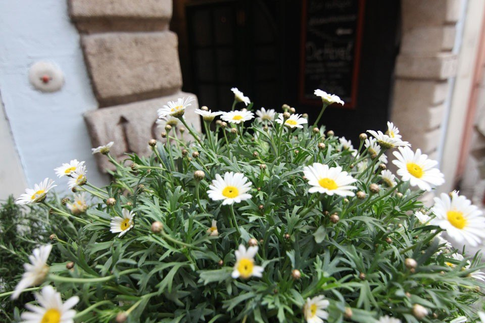
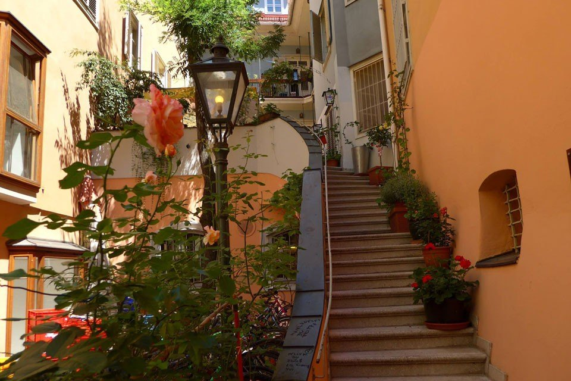

Prokopigasse 12 / Mehlplatz
Kontakt und Anfahrt
Mitten in der Grazer Altstadt, wenige Schritte vom Glockenspielplatz und vom Hauptplatz.
Adresse
Die Herzl
Prokopigasse 12 / Mehlplatz
8010 Graz
Telefon
Geöffnet
Montag bis Sonntag und an Feiertagen, 10:00–24:00 Uhr
Küche 10:00–22:00 Uhr
Anfahrt
Die Prokopigasse ist Fußgängerzone. Von der Herrengasse und vom Hauptplatz sind es wenige Minuten zu Fuß; die Straßenbahn hält am Hauptplatz.

